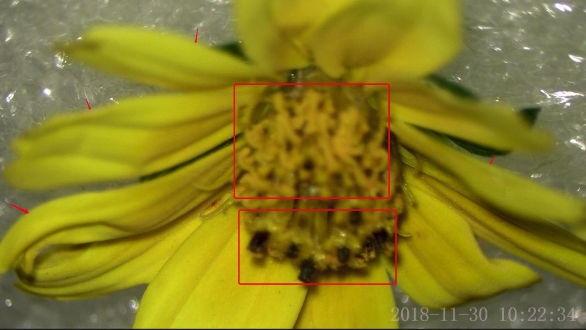
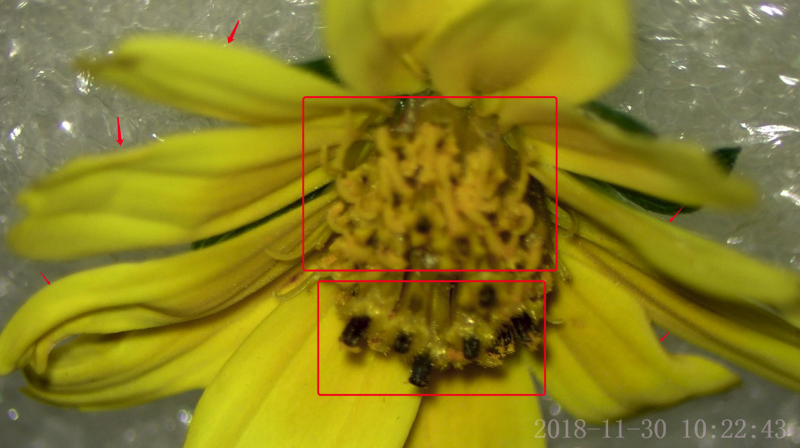

A hybrid supervised fusion deep learning framework for microscope multi-focus images

Published Wed 06 September 2023
The success of multi-focus microscopic image fusion heavily relies on the accuracy of image registration technology. However, due to the presence of fuzzy regions and weak textures in multi-focus microscope images, the registration of image patches often falls short of optimal results. Unfortunately, there is a lack of specialized registration algorithms tailored specifically for multifocal microscopic images.
Our objective is to develop a comprehensive pipeline for image fusion that incorporates an improved registration process, thereby enhancing the accuracy of fusion results. We aim to address the limitations in existing registration methods by utilizing hybrid supervision methods. These methods combine different types of supervision, such as unsupervised and semi-supervised approaches, to guide and improve the registration accuracy.
By integrating hybrid supervision techniques into the registration process, we aim to overcome the challenges posed by fuzzy regions and weak textures in multi-focus microscopic images. This comprehensive chain pipeline will enhance the overall accuracy and quality of image fusion. Our research aims to fill the gap in specialized algorithms for registration in the context of multifocal microscopic images.
Through the development of this pipeline, we strive to improve the precision and reliability of multi-focus microscopic image fusion. The incorporation of hybrid supervision methods will provide valuable guidance to enhance the registration accuracy and ultimately contribute to the advancement of image fusion techniques in the field of multi-focus microscopy.
Project leaders
QiuhuiYang
Project Example




The first image is Fuzzy image A, the second image is Fuzzy image B, and the third image is fuseImg (the final fused image)